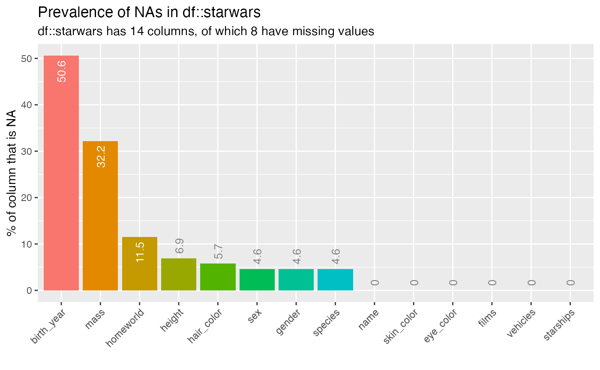
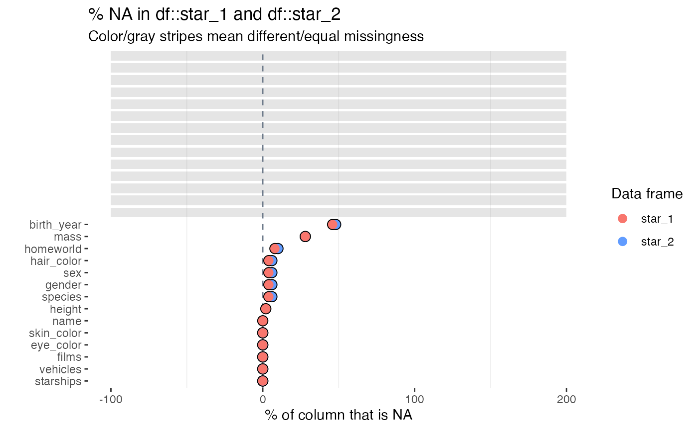

Missingness and counting NAs
Source:vignettes/pkgdown/inspect_na_examples.Rmd
inspect_na_examples.RmdIllustrative data: starwars
The examples below make use of the starwars and
storms data from the dplyr package
For illustrating comparisons of dataframes, use the
starwars data and produce two new dataframes
star_1 and star_2 that randomly sample the
rows of the original and drop a couple of columns.
inspect_na() for a single dataframe
inspect_na() summarises the prevalence of missing values
by each column in a data frame. A tibble containing the count
(cnt) and the overall percentage (pcnt) of
missing values is returned.
library(inspectdf)
inspect_na(starwars)## # A tibble: 14 × 3
## col_name cnt pcnt
## <chr> <int> <dbl>
## 1 birth_year 44 50.6
## 2 mass 28 32.2
## 3 homeworld 10 11.5
## 4 height 6 6.90
## 5 hair_color 5 5.75
## 6 sex 4 4.60
## 7 gender 4 4.60
## 8 species 4 4.60
## 9 name 0 0
## 10 skin_color 0 0
## 11 eye_color 0 0
## 12 films 0 0
## 13 vehicles 0 0
## 14 starships 0 0A barplot can be produced by passing the result to
show_plot():
inspect_na(starwars) %>% show_plot()
inspect_na() for two dataframes
When a second dataframe is provided, inspect_na()
returns a tibble containing counts and percentage missingness by column,
with summaries for the first and second data frames are show in columns
with names appended with _1 and _2,
respectively. In addition, a
-value
is calculated which provides a measure of evidence of whether the
difference in missing values is significantly different.
inspect_na(star_1, star_2)## # A tibble: 14 × 6
## col_name cnt_1 pcnt_1 cnt_2 pcnt_2 p_value
## <chr> <int> <dbl> <int> <dbl> <dbl>
## 1 birth_year 23 46 24 48 1
## 2 mass 14 28 14 28 1.00
## 3 homeworld 4 8 5 10 1
## 4 hair_color 2 4 3 6 1
## 5 sex 2 4 3 6 1
## 6 gender 2 4 3 6 1
## 7 species 2 4 3 6 1
## 8 height 1 2 NA NA NA
## 9 name 0 0 NA NA NA
## 10 skin_color 0 0 0 0 NA
## 11 eye_color 0 0 0 0 NA
## 12 films 0 0 0 0 NA
## 13 vehicles 0 0 0 0 NA
## 14 starships 0 0 0 0 NA
inspect_na(star_1, star_2) %>% show_plot()
Notes:
- Smaller -values indicate stronger evidence of a difference in the missingness rate for a single column
- If a column appears in one data frame and not the other - for
example
heightappears instar_1but norstar_2, then the correspondingpcnt_,cnt_andp_valuecolumns will containNA - Where the missingness is identically 0, the
p_valueisNA. - The visualisation illustrates the significance of the difference
using a coloured bar overlay. Orange bars indicate evidence of equality
or missingness, while blue bars indicate inequality. If a
p_valuecannot be calculated, no coloured bar is shown. - The significance level can be specified using the
alphaargument toinspect_na(). The default isalpha = 0.05.